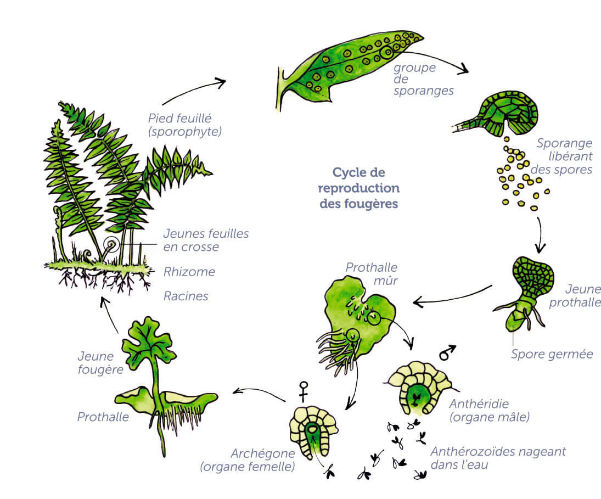
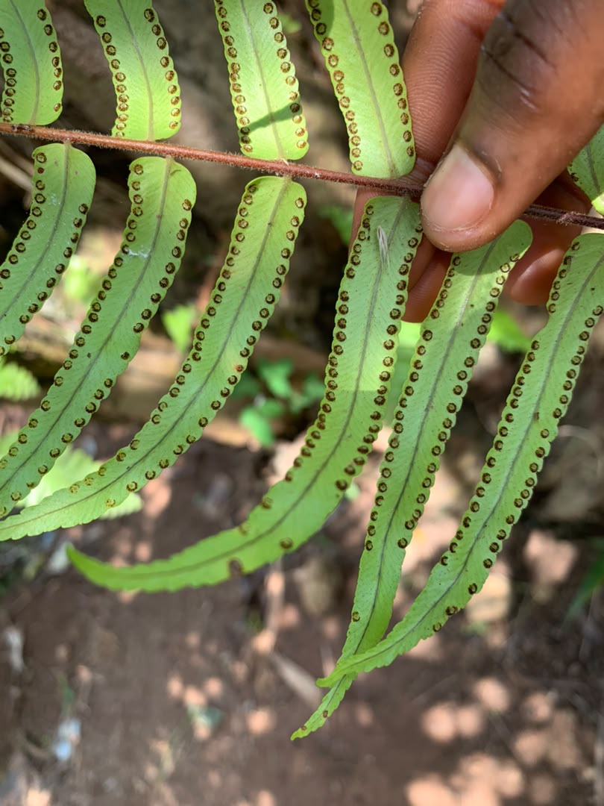

Problème résolu par les Fougères :
Pour grandir plus haut, une plante doit faire monter l'eau et les sels minéraux du sol jusqu'aux feuilles, et rester droite sans le soutien de l'eau.
Innovation apportée par les Fougères :
Les vaisseaux conduisent l'eau et les sels minéraux dans toute la plante ; la lignine rend les tiges solides ; de vraies racines puisent l'eau dans le sol.


Fougère épiphyte
Une fougère possède des racines, une tige souterraine (le rhizome) et de grandes feuilles découpées appelées frondes.
Schéma du cycle de reproduction des fougères
Les fougères se reproduisent par des spores qui germent et donnent un prothalle. Celui-ci produit les cellules reproductrices. En présence d'eau, la fécondation a lieu et donne naissance à une nouvelle fougère.

Appareil reproducteur des fougères(les spores)
Chez les fougères, la reproduction se fait par des (spores) regroupées dans des sporanges, généralement situés sous les feuilles (frondes). Les sporanges sont souvent réunis en amas appelés (sores). À maturité, ils libèrent les spores qui germent pour donner un prothalle.